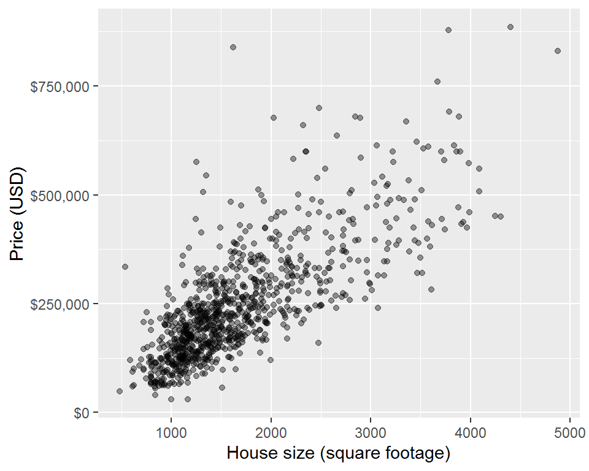
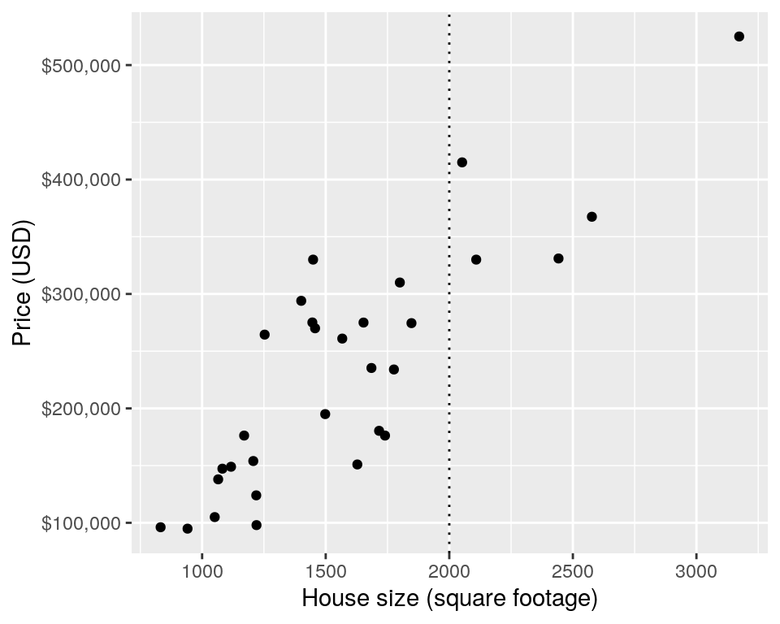
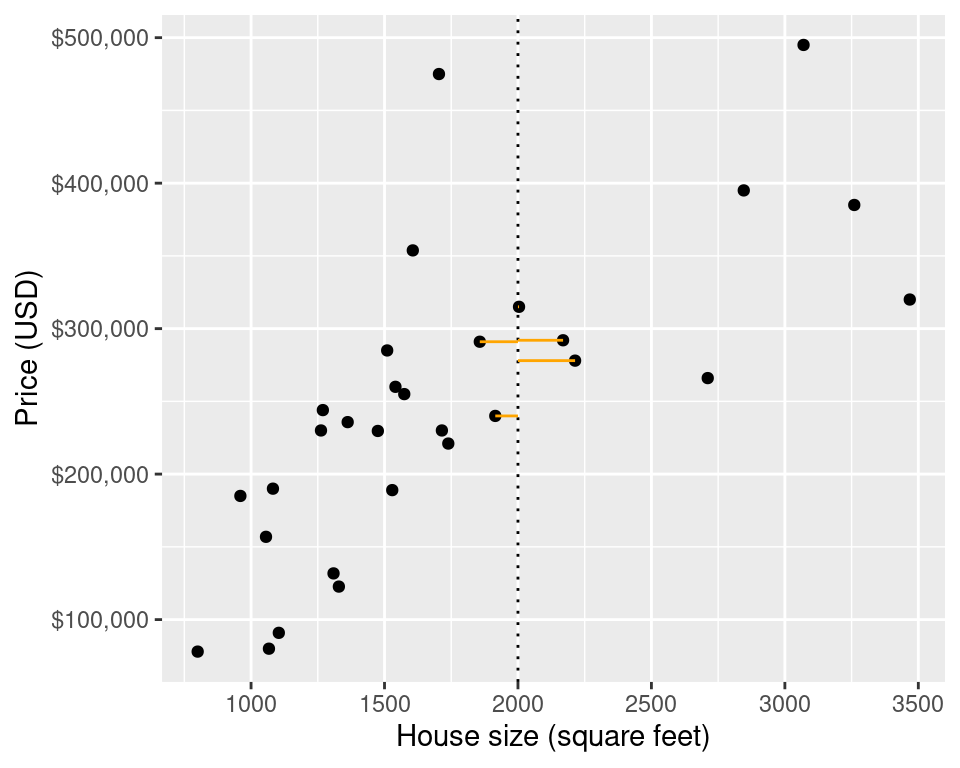
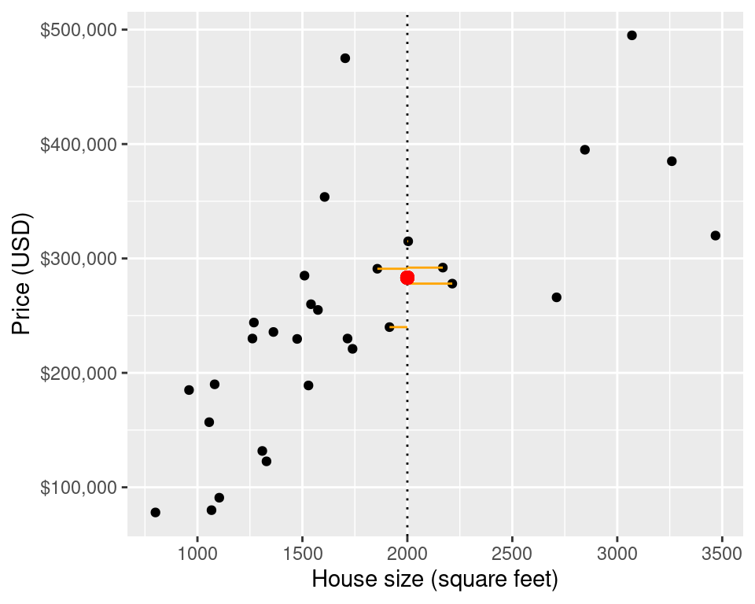
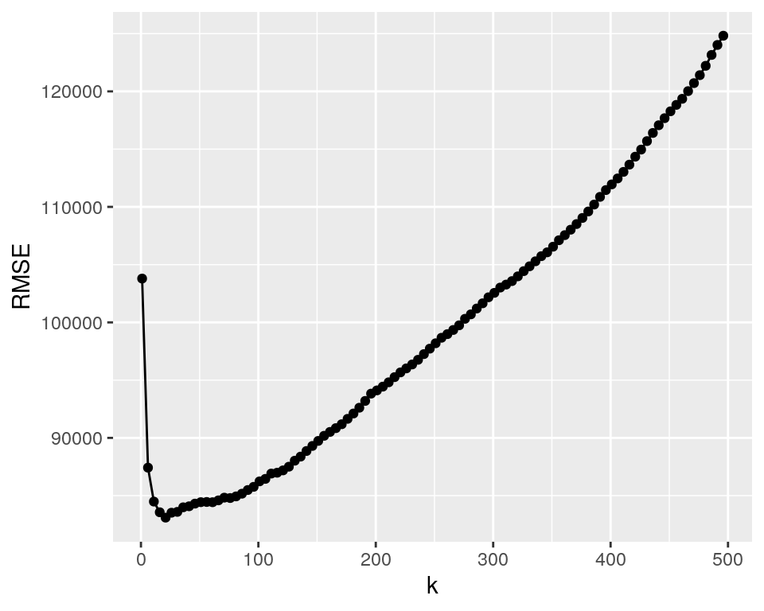
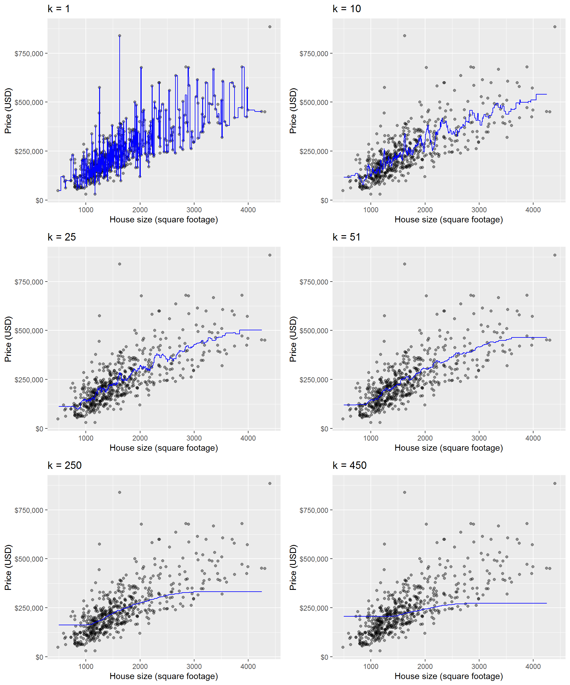
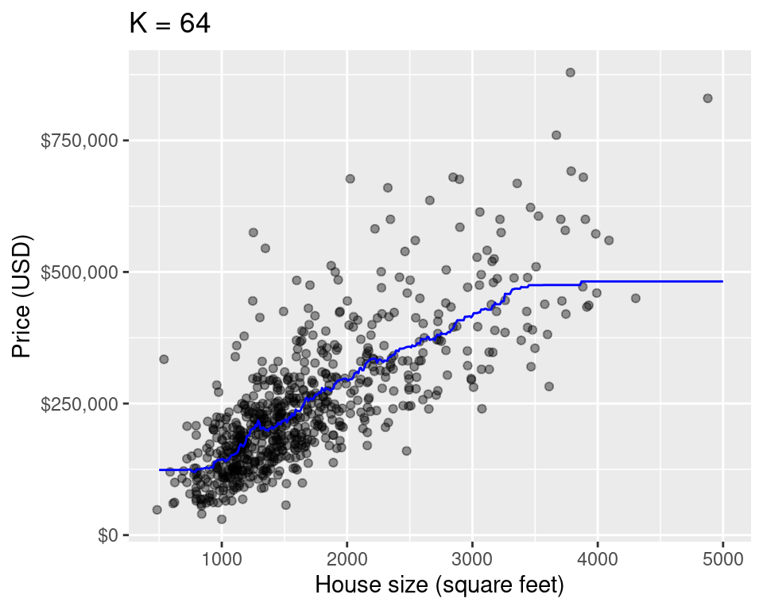

Chapter 8 Introduction to regression through K-nearest neighbours
8.1 Overview
Introduction to regression using K-nearest neighbours (k-nn). We will focus on prediction in cases where there is a response variable of interest and a single explanatory variable.
8.2 Learning objectives
By the end of the chapter, students will be able to:
- Recognize situations where a simple regression analysis would be appropriate for making predictions.
- Explain the k-nearest neighbour (k-nn) regression algorithm and describe how it differs from k-nn classification.
- Interpret the output of a k-nn regression.
- In a dataset with two variables, perform k-nearest neighbour regression in R using
caret::train()to predict the values for a test dataset. - Using R, execute cross-validation in R to choose the number of neighbours.
- Using R, evaluate k-nn regression prediction accuracy using a test data set and an appropriate metric (e.g., root means square prediction error).
- Describe advantages and disadvantages of the k-nearest neighbour regression approach.
8.3 Regression
We can use regression as a method to answer a very similar question to classification (can we use past information to predict future observations?), but in the case of regression the goal is to predict numerical values instead of class labels. An example regression prediction question would be: can we use hours spent on exercise each week to predict marathon race time? And another example regression prediction question is: can we use house size (livable square feet) to predict house sale price? We will use regression to explore this question in the rest of this chapter, using a real estate data set from Sacremento, California that is available in the caret package. Note: in addition to prediction, regression can also be used to model the relationship between two or more variables, but here we will focus only on prediction.
8.4 Sacremento real estate example
Let’s start by loading the libraries we need and previewing the data set. The data set comes with the caret package, so as soon as we load the caret library and type data(Sacramento) we are able to access it as a data frame named Sacramento.
library(tidyverse)
library(scales)
library(caret)
library(gridExtra)
data(Sacramento)
head(Sacramento)## city zip beds baths sqft type price latitude longitude
## 1 SACRAMENTO z95838 2 1 836 Residential 59222 38.63191 -121.4349
## 2 SACRAMENTO z95823 3 1 1167 Residential 68212 38.47890 -121.4310
## 3 SACRAMENTO z95815 2 1 796 Residential 68880 38.61830 -121.4438
## 4 SACRAMENTO z95815 2 1 852 Residential 69307 38.61684 -121.4391
## 5 SACRAMENTO z95824 2 1 797 Residential 81900 38.51947 -121.4358
## 6 SACRAMENTO z95841 3 1 1122 Condo 89921 38.66260 -121.3278We are interested in the columns sqft (which is the house size in livable square feet) and price, which is the house size in US dollars (USD). Let’s now visualize the data as a scatter plot where we place the predictor/explanatory variable, house size, on the x-axis and the target/response variable, price, on the y-axis (this is what we would like to predict):
eda <- ggplot(Sacramento, aes(x = sqft, y = price)) +
geom_point(alpha = 0.4) +
xlab("House size (square footage)") +
ylab("Price (USD)") +
scale_y_continuous(labels = dollar_format())
eda
From looking at the visualization above, we see that as house size (square footage) increases, so does house price. Thus, we can reason that house size might be a useful predictor of house price and perhaps we can use the size of the house to predict the price a house will be sold at (for a home that has not yet sold and thus consequently we do not know the house price).
8.5 K-nearest neighbours regression
Let’s take a small sample of the data above and walk through how K-nearest neighbours (knn) regression works before we dive in to creating our model and assessing how well it predicts house price. This subsample is taken only to be able to illustrate the mechanics of k-nn regression with a few data points, later in this chapter we will use all the data.
To take a small random sample of size 30 , we’ll use the function sample_n. This function takes two arguments:
tbl(a data frame-like object to sample from)size(the number of observations/rows to be randomly selected/sampled)
Next let’s say we come across a new house we are interested in purchasing, and it is 2000 square feet! Its advertised list price is $350,000 should we give them what they are asking? Or is that overpriced and we should offer less? Perhaps we cannot directly answer that, but we can get close by using the data we have to predict the sale price given the sale prices we have already observed.
Given the data in the plot below, we have no observations of a house that has sold that is 2000 square feet, so how can we predict the price?
small_plot <- ggplot(small_sacramento, aes(x = sqft, y = price)) +
geom_point() +
xlab("House size (square footage)") +
ylab("Price (USD)") +
scale_y_continuous(labels=dollar_format()) +
geom_vline(xintercept = 2000, linetype = "dotted")
small_plot
What we can do is use the neighbouring points to suggest/predict what the price should be. For the example above, below we find and label the 5 nearest neighbours to our observation of a house that is 2000 square feet:
## city zip beds baths sqft type price latitude
## 1 CAMERON_PARK z95682 3 2 1944 Residential 425000 38.66980
## 2 ELK_GROVE z95624 3 2 1919 Residential 298000 38.44629
## 3 RANCHO_CORDOVA z95670 4 3 1851 Residential 305000 38.57727
## 4 SACRAMENTO z95833 4 2 2155 Residential 340000 38.60691
## 5 SACRAMENTO z95835 3 2 1800 Residential 362305 38.67342
## longitude diff
## 1 -120.9990 56
## 2 -121.4008 81
## 3 -121.2856 149
## 4 -121.5413 155
## 5 -121.5085 200small_plot +
geom_segment(aes(x = 2000, y = 300500, xend = 1910, yend = 300500), col = "orange") +
geom_segment(aes(x = 2000, y = 290000, xend = 1720, yend = 290000), col = "orange") +
geom_segment(aes(x = 2000, y = 168750, xend = 1669, yend = 168750), col = "orange") +
geom_segment(aes(x = 2000, y = 276500, xend = 1650, yend = 276500), col = "orange") +
geom_segment(aes(x = 2000, y = 315537, xend = 2367, yend = 315537), col = "orange") 
Now that we have the 5 nearest neighbours to our new observation that we would like to predict the price for, we can use their values to predict a selling price for the home we are interested in buying that is 2000 square feet. Specifically, we can take the mean (or average) of these 5 values as our predicted value.
prediction <- small_sacramento %>%
mutate(diff = abs(2000 - sqft)) %>%
arrange(diff) %>%
head(5) %>%
summarise(predicted = mean(price))
prediction## predicted
## 1 346061
Our predicted price is $270,257.40 (shown as a red point above), which is much less than $350,000, and so perhaps we might want to offer less than the list price that the house is advertised at. Simple right? Not quite. We have all the same unanswered questions here with k-nn regression that we had with k-nn classification. Which \(k\) do we choose? And, is our model any good at making predictions? We’ll shortly address how to answer these questions in the context of k-nn regression.
8.6 Assessing a knn regression model
As usual, we should start by putting some test data away in a lock box that we can come back to after we choose our final model, so let’s take care of that business now. For the remainder of the chapter we’ll work with the full data set.
set.seed(2019) # makes the random selection of rows reproducible
training_rows <- Sacramento %>%
select(price) %>%
unlist() %>% # converts Class from a tibble to a vector
createDataPartition(p = 0.6, list = FALSE)
X_train <- Sacramento %>%
select(sqft) %>%
slice(training_rows) %>%
data.frame()
Y_train <- Sacramento %>%
select(price) %>%
slice(training_rows) %>%
unlist()
X_test <- Sacramento %>%
select(sqft) %>%
slice(-training_rows) %>%
data.frame()
Y_test <- Sacramento %>%
select(price) %>%
slice(-training_rows) %>%
unlist()Next, we’ll use cross-validation to choose \(k\). In k-nn classification, we used accuracy to see how well our predictions matched the true labels. Here in the context of k-nn regression we will use root mean square error (\(RMSE\)) instead. If the predictions are very close to the true values, then \(RMSE\) will be small. If, on the other-hand, the predictions are very different to the true values, then \(RMSE\) will be quite large. Thus, when we are doing cross validation to choose \(k\), we want to choose the \(k\) that gives us the smallest \(RMSE\).
The mathematical formula for calculating \(RMSE\) is shown below:
\[RMSE = \sqrt{\frac{1}{n}\sum\limits_{i=1}^{n}(y_i - \hat{y_i})^2}\]
Where:
- \(n\) is the number of observations
- \(y_i\) is the observed value for the \(ith\) observation
- \(\hat{y_i}\) is the forcasted/predicted value for the \(ith\) observation
A key feature the formula for RMSE is the distance between the observed target/response variable value, \(y\), and the prediction target/response variable value, \(\hat{y_i}\), for each observation (from 1 to \(i\)).
Now that we know how we can assess how well our model predicts a numerical value, let’s use R to perform cross-validation and to choose the optimal \(k\).
train_control <- trainControl(method = "cv", number = 10)
# makes a column of k's, from 1 to 500 in increments of 5
k_lots = data.frame(k = seq(from = 1, to = 500, by = 5))
set.seed(1234)
knn_reg_cv_10 <- train(x = X_train,
y = Y_train,
method = "knn",
tuneGrid = k_lots,
trControl = train_control)
ggplot(knn_reg_cv_10$results, aes(x = k, y = RMSE)) +
geom_point() +
geom_line()
## [1] "knn"Here we see that the smallest \(RMSE\) is from the model where \(k\) = 51. Thus the best \(k\) for this model is 51.
8.7 How do different k’s affect k-nn regression predictions
Below we plot the predicted values for house price from our k-nn regression models for 6 different values for \(k\) where the only predictor is home size. For each model, we predict a price for every possible home size across the range of home sizes we observed in the data set (here 500 to 4250 square feet) and we plot the predicted prices as a blue line:

From the plots above, we see that when \(k\) = 1, the blue line runs perfectly through almost all of our training observations. This happens because our predicted values for a given region, depend on just a single observation. A model like this has high variance and low bias. It has high variance because the flexible blue line follows the training observations very closely, and if we were to change any one of the training observation data points we would change the flexible blue line quite a lot. This means that the blue line matches the data we happen to have in this training data set, however, if we were to collect another training data set from the Sacramento real estate market it likely wouldn’t match those observations as well. However, it has low bias because the model/predicted values matches the actual observed values in this training data set very well. Another term that we use to collectively describe this phenomenon is overfitting.
What about the plot where \(k\) is quite large, say \(k\) = 450, for example? When \(k\) = 450 for this data set, the blue line is extremely smooth, and almost flat. This happens because our predicted values for a given x value (here home size), depend on many many neighbouring observations, 450 to be exact! A model like this has low variance and high bias. It has low variance because the smooth, inflexible blue line does not follow the training observations very closely, and if we were to change any one of the training observation data points it really wouldn’t affect the shape of the smooth blue line at all. This means that although the blue line matches does not match the data we happen to have in this particular training data set perfectly, if we were to collect another training data set from the Sacramento real estate market it likely would match those observations equally as well as it matches those in this training data set. This model also has high bias because the model/predicted values does not match the actual observed values very well. Another term that we use to collectively describe this kind of model is underfitting.
Ideally, what we want is neither of the two examples discussed above. Instead, we would like a model with low variance (so that it will transer/generalize well to other data sets, meaning that it isn’t too dependent on the observations that happen to be in the training set we had) and low bias (one where the model/predicted values matches the actual observed values very well). If we explore the other values for \(k\), in particular \(k\) = 51 (the optimal \(k\) as suggested by cross-validation), we can see it has a lower bias than our model with a very high \(k\) (e.g., 450), and thus the model/predicted values better match the actual observed values than the high \(k\) model. Additionally, it has lower variance than our model with a very low \(k\) (e.g., 1) and thus it should better transer/generalize to other data sets compared to the low \(k\) model.
Finally, how the choice of \(k\) affects k-nn regression also carries over to how the choice of \(k\) affects k-nn classification. It is simply easier to show this through pictures for a k-nn regression problem which is why we waited until now to discuss this.
8.8 Assessing model goodness with the test set
Next we re-train our k-nn model on the entire training data set (do not perform cross validation) and then predict on the test data set to assess how well our model does.
In the case of k-nn regression we use the function defaultSummary instead of confusionMatrix (which we used with knn classification). This is because our predictions are not class labels, but values, and as such the type of model goodness score is calculated differently. defaultSummary expects a data frame where one column is the observed target/response variable values from the test data, and a second column of the predicted values for the test data.
k = data.frame(k = 51)
set.seed(1234)
knn_reg_final <- train(x = X_train, y = Y_train, method = "knn", tuneGrid = k)
test_pred <- predict(knn_reg_final, X_test)
modelvalues <- data.frame(obs = Y_test, pred = test_pred)
test_results <- defaultSummary(modelvalues)
test_results## RMSE Rsquared MAE
## 8.868027e+04 5.688786e-01 6.435363e+04Our final model’s test error as assessed by \(RMSE\) is 91620.4. But what does this \(RMSE\) score mean? When we calculated test set prediction accuracy when we performed k-nn classification the highest possible value was 1, and if we got an value close to that it was easy to assess how well our model did on at least one new data set that had never been used to choose our model (so we didn’t violate the golden rule of statistical/machine learning). So what about \(RMSE\), what is it out of? Unfortunately there is no scale for \(RMSE\) (instead it is measured in the units of the target/response variable), and so it is a bit hard to interpret. For now, let’s consider this approach to thinking about \(RMSE\) from our testing data set: as long as its not WAY worse than the cross-validation \(RMSPE\) of our best model then we can say that we’re not doing too much worse on the test data than we did on the training data, and so it appears to be generalizing OK to a new data set it has never seen before. In future courses on statistical/machine learning we will learn more about how to interpret \(RMSE\) from our testing data set and other ways to assess our model.
And what does our final model look like when we predict across all possible house sizes we might encounter in the Sacramento area? We plotted it above where we explored how \(k\) affects k-nn regression, but we show it again now, along with the code for how we generated it:
set.seed(1234)
predictions_all <- data.frame(sqft = seq(from = 500, to = 4250, by = 1))
predictions_all$price <- predict(knn_reg_final,
data.frame(sqft = seq(from = 500, to = 4250, by = 1)))
train_data <- bind_cols(X_train, data.frame(price = Y_train)) #combines X_train and Y_train to be on data set
plot_final <- ggplot(train_data, aes(x = sqft, y = price)) +
geom_point(alpha = 0.4) +
xlab("House size (square footage)") +
ylab("Price (USD)") +
scale_y_continuous(labels = dollar_format()) +
geom_line(data = predictions_all, aes(x = sqft, y = price), color = "blue") +
ggtitle("k = 51")
plot_final
8.9 Strengths and limitations of k-nn regression
As with k-nn classification (or any prediction algorithm for that manner), k-nn regression has both strengths and weaknesses. Some are listed here:
8.9.1 Strengths of k-nn regression
- Simple and easy to understand
- No assumptions about what the data must look like
- Works well with non-linear relationships (i.e., if the relationship is not a straight line)
8.9.2 Limitations of k-nn regression
- As data gets bigger and bigger, k-nn gets slower and slower, quite quickly
- Does not perform well with a large number of predictors unless the size of the training set is exponentially larger
- Does not predict well beyond the range of values input in your training data